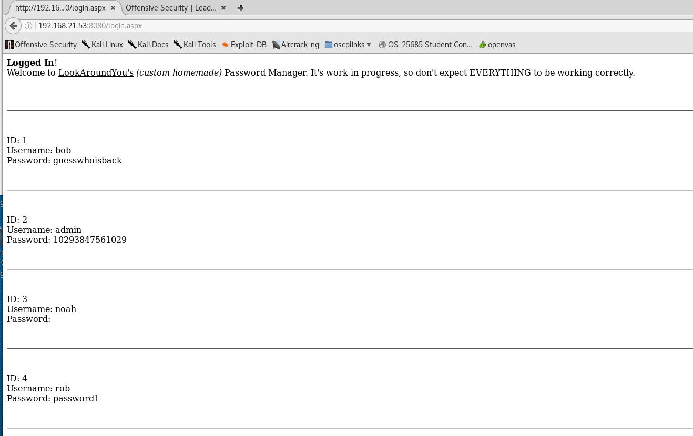

root@kali:~/gen/nmap# telnet 192.168.21.53
Trying 192.168.21.53...
Connected to 192.168.21.53.
Escape character is '^]'.
Welcome to Microsoft Telnet Service


login: bob
password:
Access Denied: Specified user is not a member of TelnetClients group.
Server administrator must add this user to the above group.
Telnet Server has closed the connection
Connection closed by foreign host.